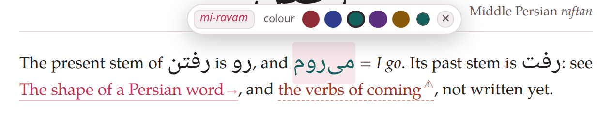

Colours, pronunciation and glosses
Three marks travel with a word: a colour, its pronunciation — a transliteration, and in Japanese the reading in kana — and a gloss, its meaning, which the studio gathers into the document’s glossary. The first two share one pair of braces; the third is written after the word.
1. Colours#
Square brackets round a word, and a colour’s name in braces after them, paint it. There are five names:
[قرمز]{crimson} *qermez* red, [آبی]{indigo} *ābi* blue, [سبز]{teal} *sabz* green,[بنفش]{violet} *banafš* violet, and [قهوهای]{amber} *qahve-i* brown.قرمز qermez red, آبی ābi blue, سبز sabz green, بنفش banafš violet, and قهوهای qahve-i brown.
Any other colour is a # and six hexadecimal digits:
[صورتی]{#C2185B} *surati* is pink, and [خانه]{#8E2B34} is crimson written out.صورتی surati is pink, and خانه is crimson written out.
| Name | On paper | Name | On paper |
|---|---|---|---|
crimson | #8E2B34 | violet | #5C2E7E |
indigo | #2F3E8F | amber | #8A5A0B |
teal | #13605C | any other | # and six hex digits |
The five are dark hues, chosen to read well on white paper; on the dark theme of the reading view each is drawn a shade lighter so that it still reads. The name may be written in any case ({Teal}), and a hex colour with small or capital letters.
What a colour mark may hold:
- Anything short of another mark
- : a word of the target language, a group of them, a Latin word, a stretch marked
{tl}. A colour cannot hold a link or another colour:[[a link](https://…)]{teal}stays as typed round the link. - A colour name the studio does not know stays as typed
- , brackets and all:
[کتاب]{red}shows the brackets and the wordred. (In a Latin-script target, an unknown word in the braces marks the word as the target language instead, uncoloured — Target-language text.) - A form marked wrong with
✗is never coloured - : its red is the studio’s, and a colour mark on it is dropped (Special characters).
You rarely type these. In the reading view, point at a word of the target language and a small cloud opens with the five colours and a custom swatch that opens your system’s colour picker; a click writes the mark into the document, {teal} or {#2F6B8F}.

Pointing at میروم: its transliteration at the head of the cloud, then the colours, the custom swatch, and ✕ to take the colour off. Below, a link to another document and, dashed, one waiting for its document.
In the editor’s preview the same cloud rewrites the text you are editing, and one undo takes it back. The editor’s colour button types an empty []{teal} with the cursor between the brackets.
On paper a colour is printed as it is. A PDF built Black and white — the photocopier’s option of the PDF menu — prints every coloured word in black.
2. Transliteration#
translit: in the braces gives a word — or a group of two or three words — its transliteration. It is not printed: the word looks exactly as if it were unmarked, and the transliteration appears when you point at it, in the reading view and in the editor’s preview.
[تند]{translit:tond} *fast* looks like plain Persian, and so does the group[یواش برو]{translit:yavāš borou} *go slowly*: point at them.تند fast looks like plain Persian, and so does the group یواش برو go slowly: point at them.
A colour and a transliteration share one pair of braces, the colour first:
[کتابخانه]{teal translit:ketābxāne} = *library*کتابخانه = library
- The value runs to the end of the braces, spaces and all — which is why the colour must come before it:
{translit:tond teal}is the transliteration tond teal. - The same key written twice keeps its last value.
- On paper only the colour, if there is one, is printed.
The same cloud that colours a word edits its transliteration: the transliteration at its head is a button — click it, type, press Enter (Esc cancels, clicking away saves); a word without one shows + instead. An empty field removes the transliteration, and the brackets go too when it was the word’s only mark.
The headword of a vocabulary entry is the one exception: pointing at it opens the colour cloud only — a swatch writes ## [کتاب]{teal} | … into the heading, ✕ takes the colour off. Its transliteration (and its reading, in Japanese) is written in the heading’s own parts and shown in the entry itself; the cloud neither shows nor edits it (Headings).
What the transliteration is called, and how it is written, depends on the language: a transliteration in Persian, Arabic and Hindi, a pronunciation in the Latin-script languages, rōmaji in Japanese and pinyin in Chinese. Each language’s page in Documents in each language gives its conventions.
3. The reading: kana#
Japanese is the one target language with a reading: the kana a Japanese reader would see over the kanji. kana: in the braces gives it, with or without the rōmaji, in either order; reading: is another name for kana:.
target: ja[漢字]{kana:かんじ} has its reading, [東京]{translit:Tōkyō} its rōmaji,[日本語]{kana:にほんご translit:nihongo} both, and[学校]{indigo kana:がっこう translit:gakkō} a colour as well.漢字 has its reading, 東京 its rōmaji, 日本語 both, and 学校 a colour as well.
Pointing at the word shows the kana above the rōmaji, and the glossary has a column for it. Inline, the kana is not printed: the PDF sets the word alone. (A vocabulary heading prints its reading part.) In the editor of a Japanese document a kana button wraps the selected words in […]{kana:} with the cursor ready for the reading.
In any other language kana: is kept in the file and shown nowhere.
4. Glosses#
A gloss is a word of the target language, an equals sign, and its meaning in italics:
کتاب = *book*, آهستگی = *slowness, gentleness*, and a group: حرکت آهسته = *slow motion*, in films.کتاب = book, آهستگی = slowness, gentleness, and a group: حرکت آهسته = slow motion, in films.
The = turns grey by itself, and the studio gathers every gloss of the document into its glossary, ⇄ Glosses in the reading view: a table of the word, its transliteration and its meaning (and the reading, in Japanese), sortable and filterable, with flashcards made from it.
The italics are what mark where the meaning ends. Nothing else could: in حرکت آهسته = *slow motion*, in films only slow motion is the meaning, and the rest is commentary. Everything the meaning covers goes inside the stars, near-synonyms included; what comments on it stays outside. Written without italics, a gloss gives the glossary exactly one word — the first after the = — and that row is shown in red, with a cloud saying why, rather than a guess that looks right.
The word glossed may carry marks of its own, and may be bold; its transliteration, if it has none here, is taken from any other mark or vocabulary heading of the same word in the document:
[تند]{teal translit:tond} = *fast*, and **خانه** = *house*.تند = fast, and خانه = house.
In a Latin-script target the word glossed is a marked run:
target: it[bello]{tl} = *beautiful*, and [la casa]{translit:la càṡa} = *the house*.bello = beautiful, and la casa = the house.
Where glosses are gathered from: paragraphs, headings, bullet lists (labelled ones too), the cells of a table below its header row, boxes, Latin blocks and footnotes — and a vocabulary heading’s meaning part (Headings). Not gathered: a numbered list, a […]{tl} stretch (which is opaque), and exercises. The editor’s = button types = with its spaces.
An = that does not follow a word of the target language — after a Latin word of the prose, or an arrow — is just an equals sign.
A wrong form is still a word of the target language. ✗کتابا = *wrong*, or ✗[bello]{tl} = *wrong* in a Latin-script target, greys its = like any gloss, on the screen and on paper, and puts the wrong form into the glossary, where it would be learned from the flashcards. To say what a wrong form would mean without that, put the meaning in brackets, with no =:
✗کتابا (*books*, wrongly formed) beside کتابها = *books*.❌کتابا (books, wrongly formed) beside کتابها = books.